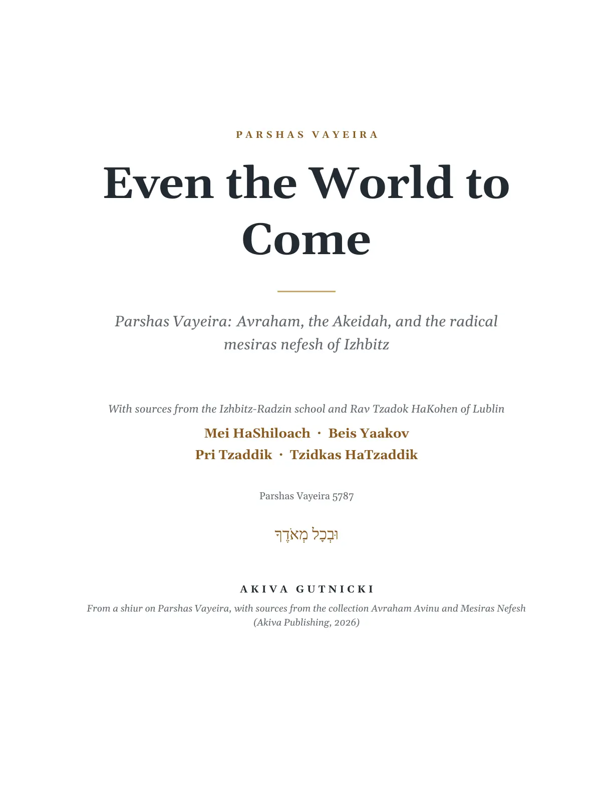
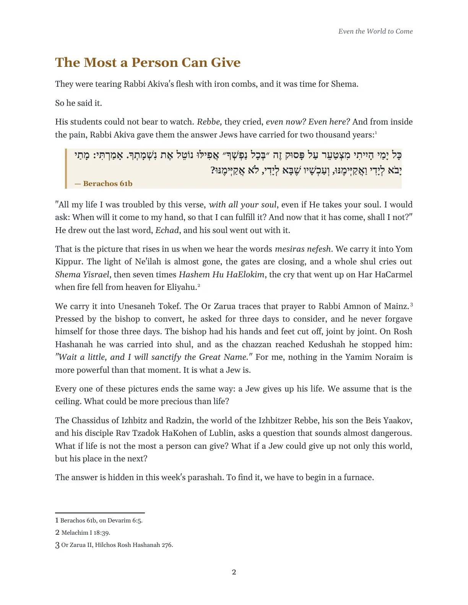
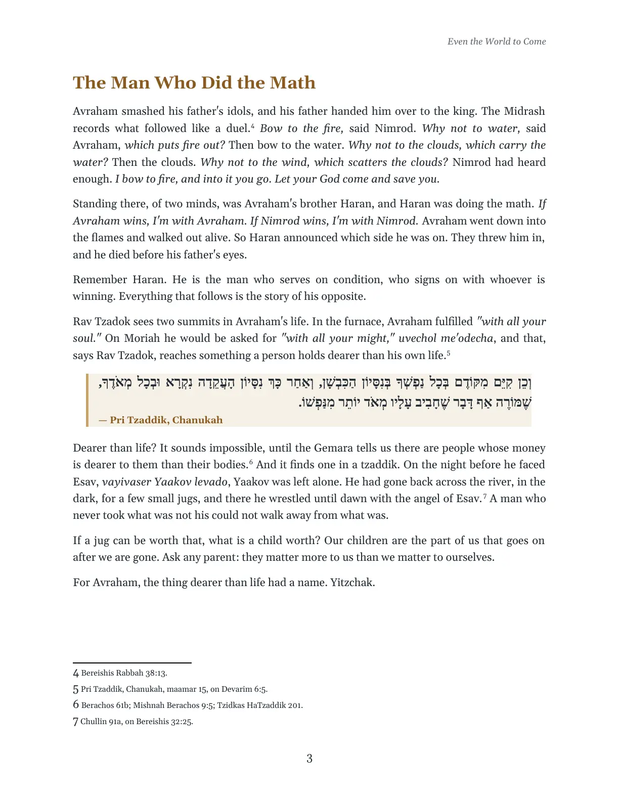
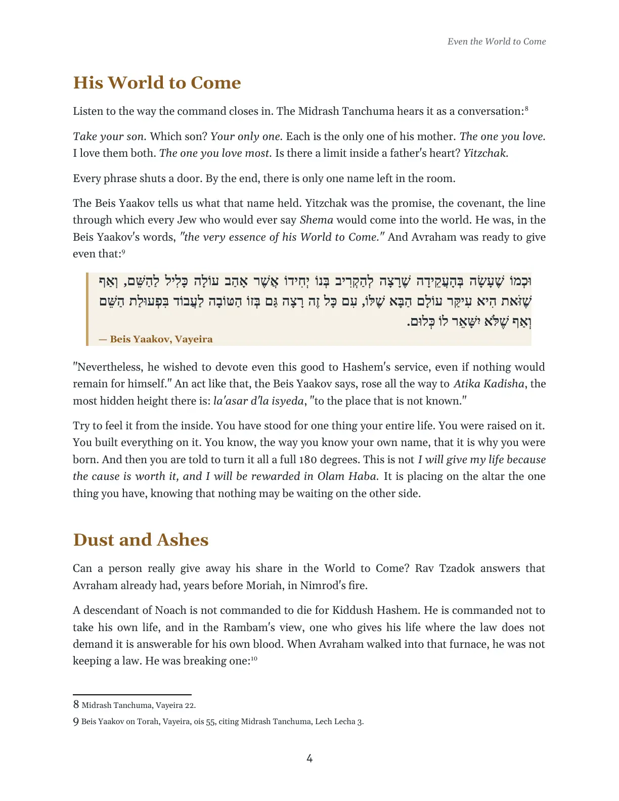
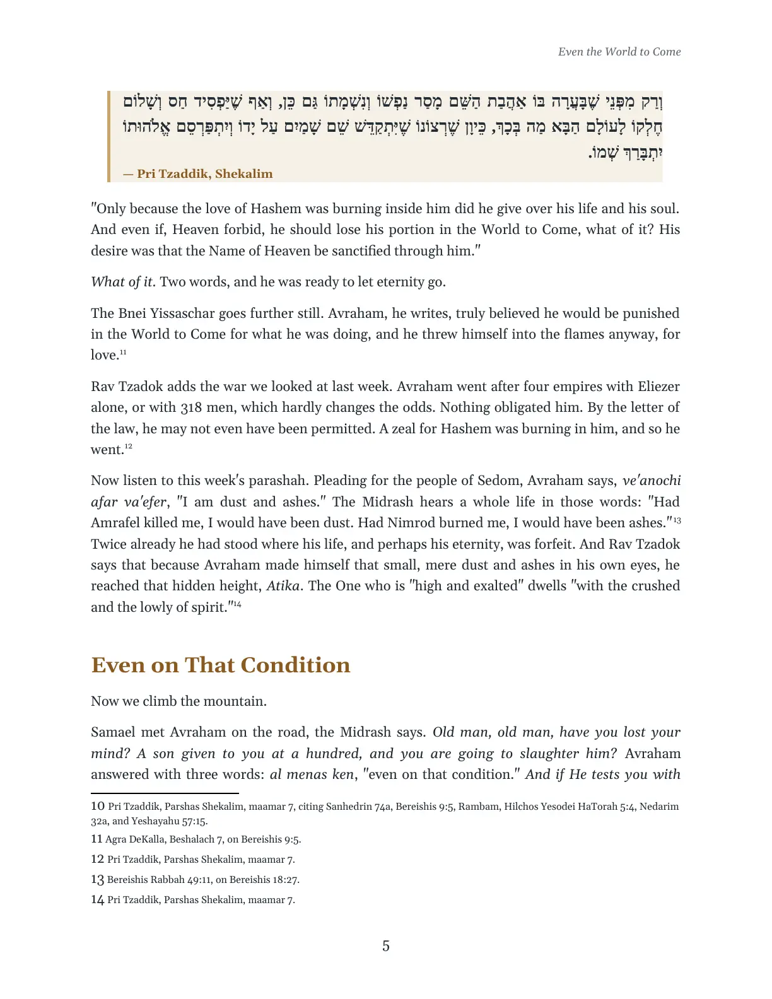
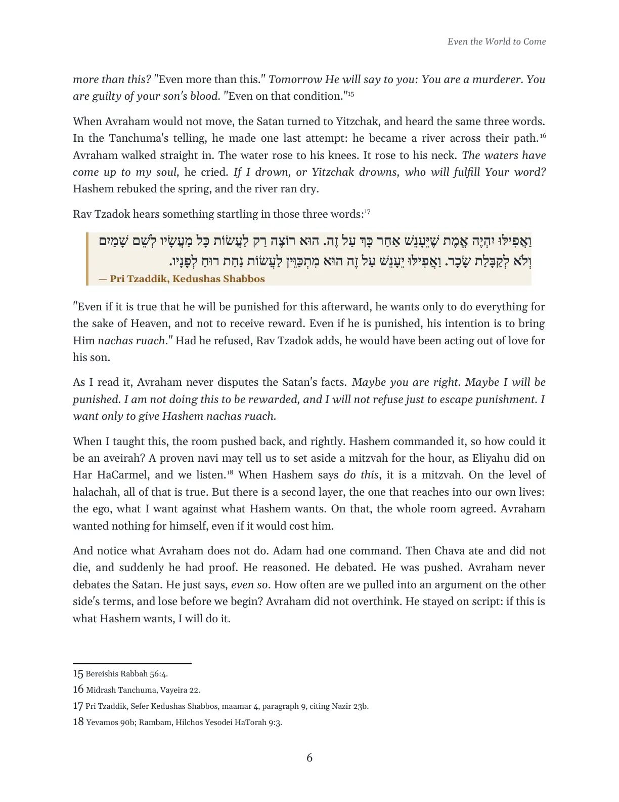
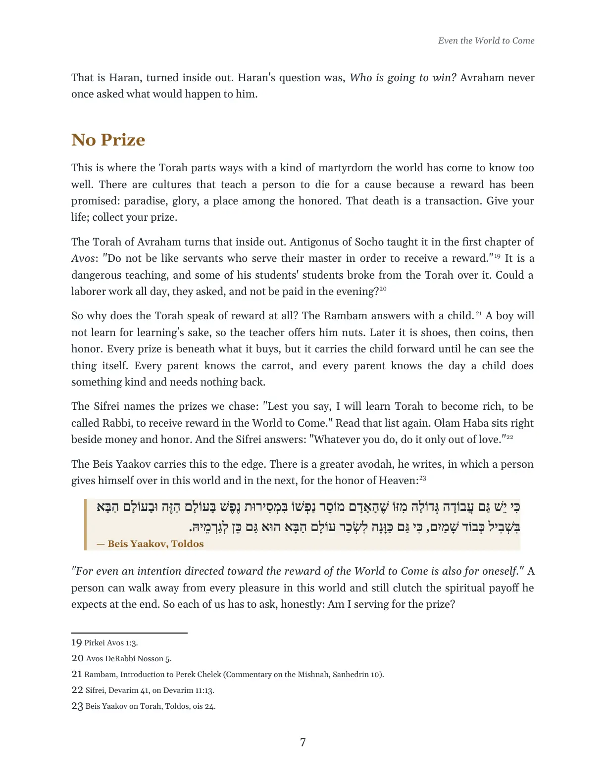
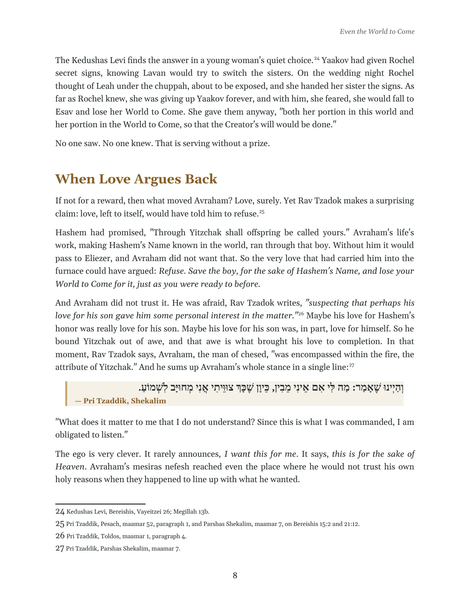
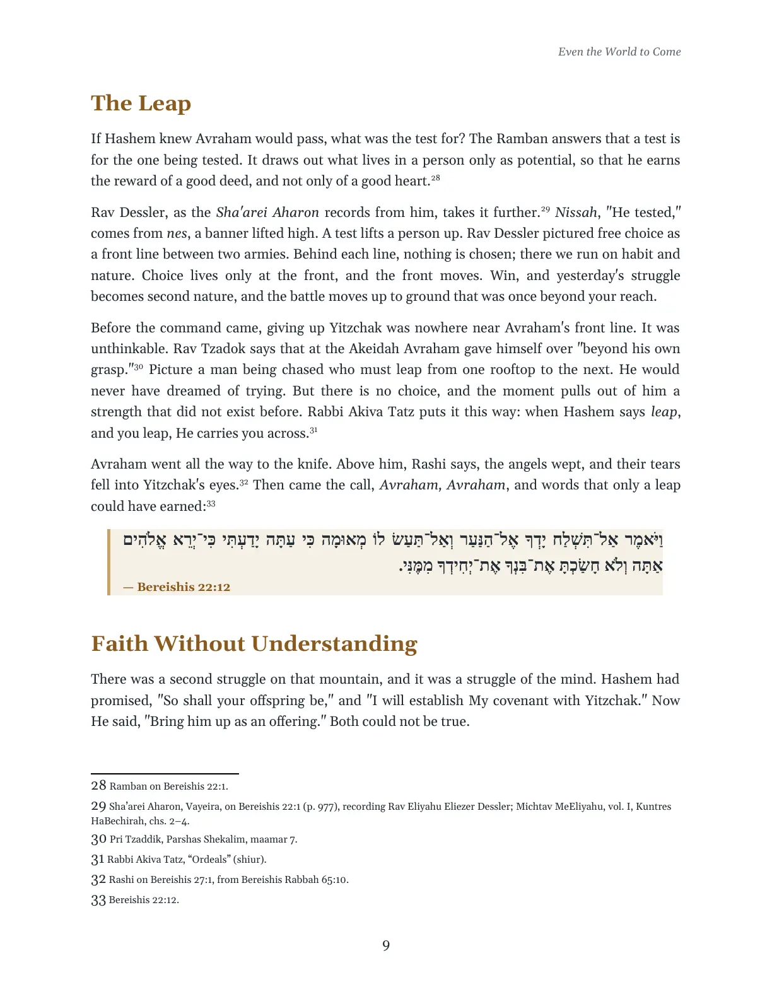
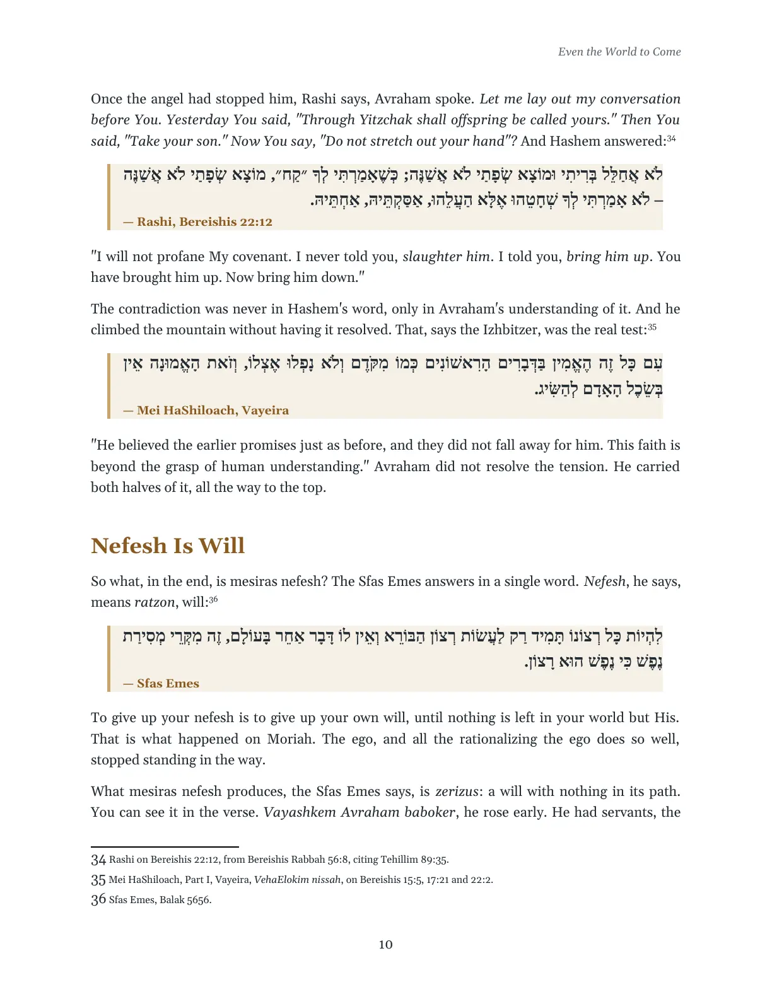
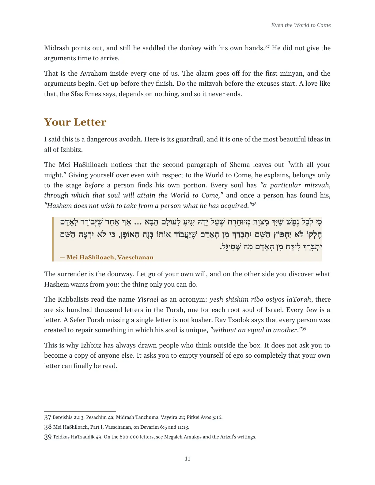
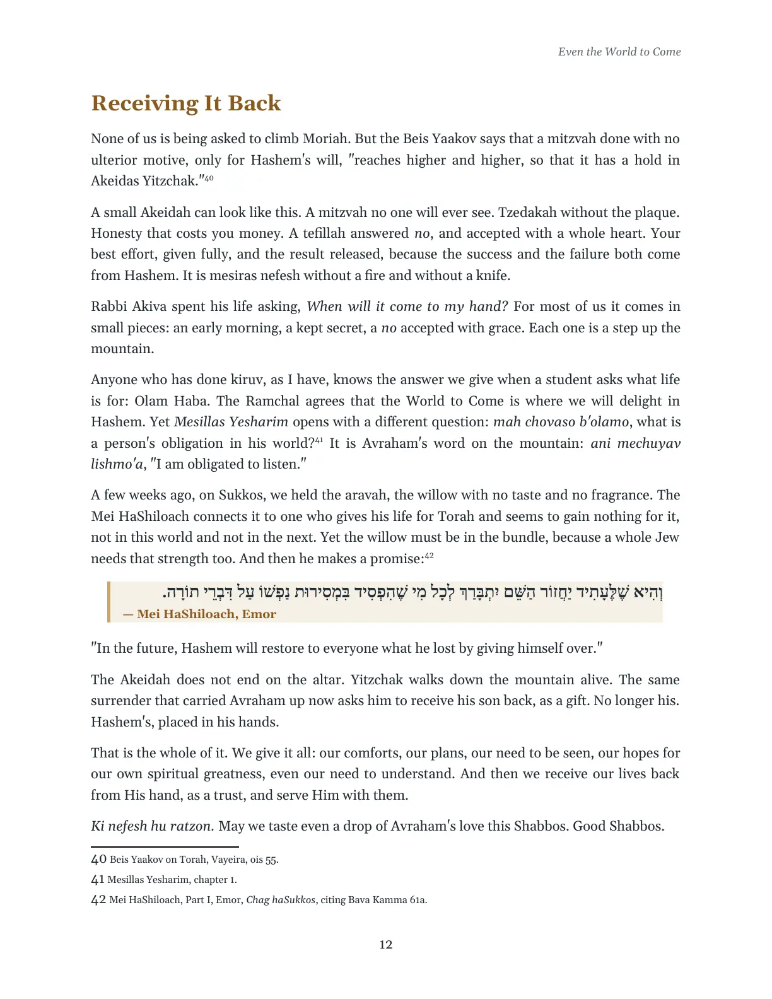
Avraham, the Akeidah, and the radical mesiras nefesh of Izhbitz
Shown page by page from the PDF. For text you can select, search or have read aloud, open the PDF or download the Word file.












The full transcribed shiur, in ten parts, sets out its sources in Hebrew and English. The fifteen Hebrew–English interlinear source passages are in the reader.